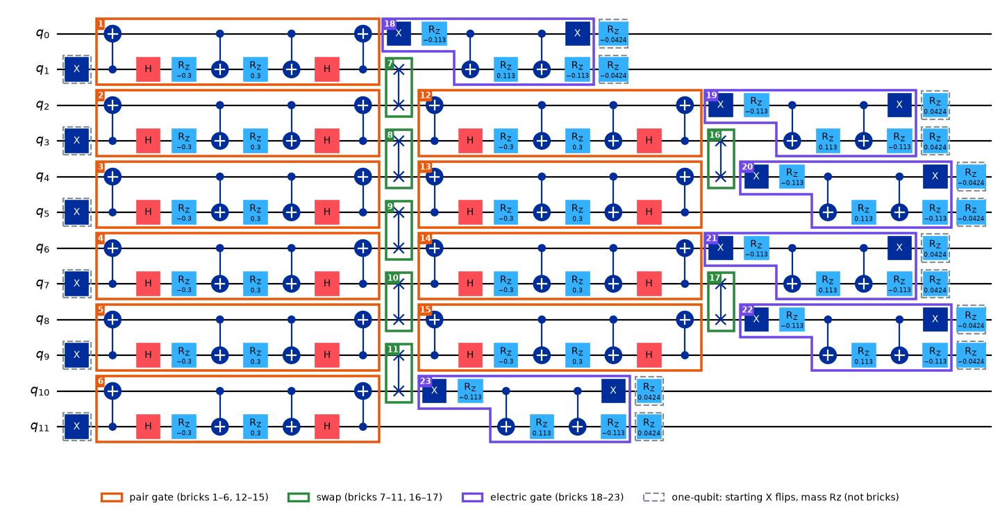
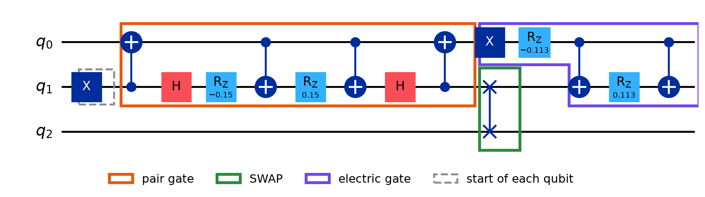
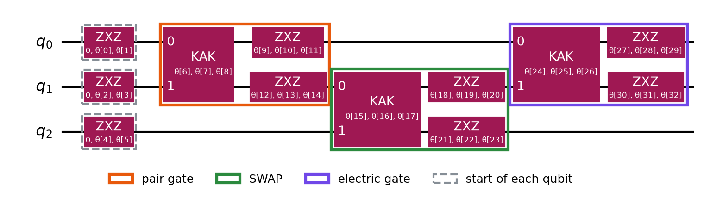

Circuit Backprop Workbook
Training our circuit means finding a slope for every angle. This workbook shows how one forward pass and one backward pass give all of them, using the same chain rule as backprop in a neural network (Backprop Workbook), and the chains from the Tensor Chain Workbook. Work each exercise on paper, then Check. Within 0.01 counts.
Words we use
| # | our word | meaning | also called |
|---|---|---|---|
| 1 | Angle | a number inside a gate that training can turn, like a weight in a neural network | parameter, θ |
| 2 | Trainable circuit | the short circuit whose angles we tune | ansatz |
| 3 | Target | the state of the full, deep Trotter circuit, which the short circuit should copy | target state |T⟩ |
| 4 | Overlap, fidelity | how alike two states are: line up their entries, multiply, add; fidelity = overlap² | ⟨T|ψ⟩, |⟨T|ψ⟩|² |
| 5 | Loss | L = 1 − fidelity: 0 when the circuit copies the target perfectly | cost, objective |
| 6 | Slope | how much L moves per unit nudge of one angle | gradient entry, ∂L/∂θ |
| 7 | Layer | a group of two-qubit blocks that share no qubit, applied together | moment, ASAP layer |
| 8 | Forward state Sk | the state after the first k layers, starting from |0…0⟩ | ψ_k |
| 9 | Target side Bk | the target with the layers after layer k undone; the last one is T itself | backward state, adjoint state, φ_k |
| 10 | Undo a layer | apply the layer backwards: its conjugate transpose (transpose, then complex conjugate) | G†, inverse |
| 11 | Checkpoint | a forward state saved on the way, so it need not be recomputed from the start | gradient checkpointing |
| 12 | Training step | one forward pass + one backward pass, then all angles turned once | iteration |
1. Where 4,826 angles come from
The big picture
We build the hadron circuit: the brickwork. It has three kinds of two-qubit gate (pair, electric, SWAP) plus one-qubit rotations. Its numbers are fixed.
IBM's library copies it into a trainable circuit: the same gates in the same places, but each one rebuilt with adjustable angles θ. Training turns the θ's until the copy makes the state we want.
4,826 = the number of θ's in that copy (40 qubits, 6-step start).
Our circuit: one step of the brickwork

Orange = pair gate, green = SWAP, purple = electric gate, grey dashed = one-qubit rotations.
IBM's copy, gate by gate
Our piece: three gates from the brickwork above, one of each kind: pair gate 1 (qubits 0, 1), the SWAP next to it (qubits 1, 2), electric gate 18 (qubits 0, 1).

IBM's copy of the same piece. Every θ is one adjustable angle:

The same recipe for every kind of gate: each two-qubit gate (pair, SWAP or electric) becomes one KAK box followed by one ZXZ box on each of its two qubits. Only the starting values of the θ's differ.
| box | what it does | θ's |
|---|---|---|
| ZXZ | turns one qubit to any direction | 3 |
| ZXZ(0, θ, θ) | the same, at the very start of each qubit: one turn does nothing to |0⟩, so it is fixed at 0 | 2 |
| KAK | makes two qubits act on each other, in three possible ways (called XX, YY, ZZ); one θ for how much of each | 3 |
Counting left to right in IBM's copy (the same coloured boxes as in the picture):
| box in the picture | what is inside | θ's in this box | running total |
|---|---|---|---|
| grey dashed: start of q0, q1, q2 | 3 ZXZ boxes, 2 θ's each (θ[0] … θ[5]) | 2 + 2 + 2 = 6 | 6 |
| orange: pair gate | KAK (3: θ[6] θ[7] θ[8]) + ZXZ on q0 (3: θ[9] θ[10] θ[11]) + ZXZ on q1 (3: θ[12] θ[13] θ[14]) | 3 + 3 + 3 = 9 | 6 + 9 = 15 |
| green: SWAP | KAK (3: θ[15] … θ[17]) + ZXZ on q1 (3: θ[18] … θ[20]) + ZXZ on q2 (3: θ[21] … θ[23]) | 3 + 3 + 3 = 9 | 15 + 9 = 24 |
| purple: electric gate | KAK (3: θ[24] … θ[26]) + ZXZ on q0 (3: θ[27] … θ[29]) + ZXZ on q1 (3: θ[30] … θ[32]) | 3 + 3 + 3 = 9 | 24 + 9 = 33 |
Check: the last θ in the picture is θ[32], and counting from θ[0] that is 33 θ's ✓.
From this piece to the whole circuit
The whole trainable circuit is the same two kinds of box, repeated:
| box | what it is | θ's | how many of them |
|---|---|---|---|
| grey dashed | one ZXZ box at the start of a qubit; its first Z is fixed at 0, so only 2 of its turns are trained | 2 | one per qubit |
| coloured (orange / green / purple) | one KAK box + one ZXZ box on each of the gate's two qubits = 3 + 3 + 3 | 9 | one per two-qubit gate |
The 2 and the 9 are counted separately, not added into one number: a qubit's 2 come once, while a qubit takes part in many gates.
θ's = 2 × (number of qubits) + 9 × (number of two-qubit gates)
12 qubits, counted
Let's count the θ's of the 12-qubit trainable circuit, in two parts: the single-qubit part, then the two-qubit gates.
Part 1, single-qubit part. Each of the 12 qubits has one grey start box: 12 boxes × 2 θ's = 24 θ's.
Our circuit's own one-qubit gates (the 6 X flips at the start, the H gates, the mass Rz's after each step: the grey dashed boxes in the brickwork picture) add no θ's: IBM's copy absorbs them into the ZXZ boxes next to them.
Part 2, the two-qubit gates. The brickwork picture at the top shows one Trotter step. The trainable circuit repeats that step 6 times (our 6-step start). In the picture, step 1 has 10 orange pair gates (bricks 1–6, 12–15), 7 green SWAPs (bricks 7–11, 16–17) and 6 purple electric gates (bricks 18–23). Steps 2–6 are the same except for 3 more SWAPs each: step 1 skips the first SWAP layer.
| step | orange: pair | green: SWAP | purple: electric | two-qubit gates | θ's |
|---|---|---|---|---|---|
| 1 | 10 | 7 | 6 | 10 + 7 + 6 = 23 | 23 × 9 = 207 |
| 2 | 10 | 10 | 6 | 10 + 10 + 6 = 26 | 26 × 9 = 234 |
| 3 | 10 | 10 | 6 | 10 + 10 + 6 = 26 | 26 × 9 = 234 |
| 4 | 10 | 10 | 6 | 10 + 10 + 6 = 26 | 26 × 9 = 234 |
| 5 | 10 | 10 | 6 | 10 + 10 + 6 = 26 | 26 × 9 = 234 |
| 6 | 10 | 10 | 6 | 10 + 10 + 6 = 26 | 26 × 9 = 234 |
| 6 steps | 60 | 57 | 36 | 153 | 1,377 |
Total: 24 (qubits) + 1,377 (two-qubit gates) = 1,401 θ's.
40 qubits, counted
The same brickwork, taller (20 sites instead of 6).
Part 1, single-qubit part. 40 qubits × 2 θ's = 80 θ's.
Part 2, the two-qubit gates, again one step repeated 6 times. Where do 38, 28 and 20 come from? Count each layer of bricks in the 12-qubit picture (6 sites), see how it grows with the number of sites n, then put in n = 20:
| layer in the picture | which qubits (12-qubit picture) | 6 sites | rule | 20 sites |
|---|---|---|---|---|
| orange, 1st pair layer (bricks 1–6) | q0-1, q2-3, …, q10-11: every site | 6 | n | 20 |
| orange, 2nd pair layer (bricks 12–15) | q2-3 … q8-9: every site except the two ends | 4 | n − 2 | 18 |
| pair gates per step | 10 | 2n − 2 | 38 | |
| purple, electric (bricks 18–23) | one per site | 6 | n | 20 |
| green, SWAP layer (bricks 7–11) | q1-2, q3-4, …, q9-10: between every two neighbouring sites | 5 | n − 1 | 19 |
| green, SWAP layer (bricks 16–17) | q3-4, q7-8: every 4th qubit | 2 | (n − 1) ÷ 2, rounded down | 9 |
| SWAPs in step 1 | 7 | 28 | ||
| green, extra SWAP layer in steps 2–6 (step 1 skips it, so it is not in the picture) | q1-2, q5-6, q9-10, …: every 4th qubit | 3 | n ÷ 2 | 10 |
| SWAPs in steps 2–6 | 10 | 38 |
All three 40-qubit numbers match a direct count of the gates in our code.
Per step, then:
| step | orange: pair | green: SWAP | purple: electric | two-qubit gates | θ's |
|---|---|---|---|---|---|
| 1 | 38 | 28 | 20 | 38 + 28 + 20 = 86 | 86 × 9 = 774 |
| 2 | 38 | 38 | 20 | 38 + 38 + 20 = 96 | 96 × 9 = 864 |
| 3 | 38 | 38 | 20 | 38 + 38 + 20 = 96 | 96 × 9 = 864 |
| 4 | 38 | 38 | 20 | 38 + 38 + 20 = 96 | 96 × 9 = 864 |
| 5 | 38 | 38 | 20 | 38 + 38 + 20 = 96 | 96 × 9 = 864 |
| 6 | 38 | 38 | 20 | 38 + 38 + 20 = 96 | 96 × 9 = 864 |
| 6 steps | 228 | 218 | 120 | 566 | 5,094 |
Total: 80 + 5,094 = 5,174 θ's.
Last step: one θ per pair and electric gate is switched off
The KAK box has 3 θ's because two qubits can act on each other in three ways (called XX, YY and ZZ). Our pair and electric gates never use the third way, ZZ: its θ starts at 0. We keep that θ fixed at 0 instead of training it, because then each of these gates needs one CNOT fewer on hardware (3 → 2). SWAPs use all three ways, so theirs stay.
So: one θ fewer for every pair and every electric gate.
The numbers of pair and electric gates are the "6 steps" row of the tables above:
| θ's before | pair gates | electric gates | θ's switched off | trainable θ's | |
|---|---|---|---|---|---|
| 12 qubits | 1,401 | 60 | 36 | 60 + 36 = 96 | 1,401 − 96 = 1,305 |
| 40 qubits | 5,174 | 228 | 120 | 228 + 120 = 348 | 5,174 − 348 = 4,826 ✓ a direct count in our code |
Inside the KAK box (3 CNOTs; the ZZ θ sits in the Rz)

2. Why not nudge each angle?
Training needs a slope for every angle at every training step. The obvious way: nudge one angle a tiny bit, simulate the circuit again, see how much L moved; repeat for each angle.
3. One qubit, one angle, by hand
Worked example: the smallest circuit
The circuit: one qubit, starting at |0⟩, one rotation by angle θ. The target: T = |1⟩ = (0, 1).
Which rotation? A reminder of the three one-qubit rotations, applied to |0⟩:
| rotation | matrix | applied to |0⟩ |
|---|---|---|
| RX(θ) = e−iθX/2 | [[cos θ/2, −i sin θ/2], [−i sin θ/2, cos θ/2]] | cos(θ/2)|0⟩ − i sin(θ/2)|1⟩ |
| RY(θ) = e−iθY/2 | [[cos θ/2, −sin θ/2], [sin θ/2, cos θ/2]] | cos(θ/2)|0⟩ + sin(θ/2)|1⟩ |
| RZ(θ) = e−iθZ/2 | [[e−iθ/2, 0], [0, eiθ/2]] | e−iθ/2|0⟩ (only a phase) |
We use RY: all its numbers are real, so no i appears by hand. Its result as a vector: ψ(θ) = (cos θ/2, sin θ/2).
Part A: the derivation (symbols only)
A1. The equations:
state: ψ(θ) = (cos(θ/2), sin(θ/2))
overlap: o = ψ · T
= cos(θ/2)·0 + sin(θ/2)·1
= sin(θ/2)
fidelity: F = o²
loss: L = 1 − F
A2. Differentiate each equation by itself (one link of the chain each):
L = 1 − F → ∂L/∂F = −1 F = o² → ∂F/∂o = 2o o = sin(θ/2) → ∂o/∂θ = ½ cos(θ/2)
The last one: the derivative of sin is cos, times the derivative of θ/2, which is ½.
A3. Chain them:
∂L/∂θ = ∂L/∂F × ∂F/∂o × ∂o/∂θ
= (−1) × (2o) × (½ cos(θ/2))
= − o · cos(θ/2)
= − sin(θ/2) · cos(θ/2)
Part B: the example, θ = 60°
θ/2 = 30°, sin 30° = 0.5, cos 30° = 0.866.
forward: ψ = (0.866, 0.5)
o = 0.5
F = 0.5² = 0.25
L = 1 − 0.25 = 0.75
backward: ∂L/∂F = −1
∂F/∂o = 2 × o = 2 × 0.5 = 1
∂o/∂θ = ½ × cos 30° = ½ × 0.866 = 0.433
∂L/∂θ = (−1) × 1 × 0.433 = −0.433
Check by nudging. Turn θ up by 0.01 (in radians: 60° = 1.047 rad, so θ = 1.057). Then L = 1 − sin²(1.057/2) = 0.7457, which is 0.0043 less than 0.75: L moved by −0.43 per unit of θ ✓.
Meaning: the slope is negative, so turning θ up lowers L: the qubit turns further towards |1⟩.
Slopes use θ in radians: "the derivative of sin is cos" is true only in radians.
4. A two-qubit gate with one angle
Assumptions (choices for this example)
1. Two qubits, A (first) and B (second).
2. Start: only |00⟩ and |10⟩, with amounts α and β: |ψ₀⟩ = α|00⟩ + β|10⟩.
3. Target: the Bell state (an assumption, chosen because this gate can reach it exactly): |T⟩ = (1/√2)|00⟩ + (1/√2)|11⟩.
4. Trainable gate: CRY(θ), "if A is |1⟩, turn B by θ". θ is the only angle.
5. All amounts are real, so the overlap is "multiply matching amounts and add".
The gate
CRY(θ) = |0⟩⟨0| ⊗ I + |1⟩⟨1| ⊗ R_Y(θ) R_Y(θ) = e^(−iθY/2) = cos(θ/2) I − i sin(θ/2) Y R_Y(θ)|0⟩ = cos(θ/2)|0⟩ + sin(θ/2)|1⟩
Part A: the derivation (symbols only)
Forward:
CRY(θ) α|00⟩ = α|00⟩
(A is 0: B untouched)
CRY(θ) β|10⟩ = β |1⟩ ⊗ R_Y(θ)|0⟩
(A is 1: B turned)
= β cos(θ/2)|10⟩ + β sin(θ/2)|11⟩
|ψ(θ)⟩ = α|00⟩ + β cos(θ/2)|10⟩ + β sin(θ/2)|11⟩
Overlap with the Bell target (matching kets give 1, different kets give 0):
o = ⟨T|ψ(θ)⟩ = (1/√2)·α from |00⟩ + 0 |10⟩ is not in T + (1/√2)·β sin(θ/2) from |11⟩ = (α + β sin(θ/2)) / √2 F = o² L = 1 − F
Backward:
∂L/∂F = −1
∂F/∂o = 2o
∂o/∂θ = (β/√2) × ½ cos(θ/2)
∂L/∂θ = ∂L/∂F × ∂F/∂o × ∂o/∂θ
= (−1) × (2o) × (β/√2) × ½ cos(θ/2)
Part B: the example, α = β = 1/√2, θ = 60°
o = (1/√2 + (1/√2) × sin 30°) / √2
= (0.707 + 0.707 × 0.5) / 1.414
= 1.061 / 1.414 = 0.75
F = 0.75² = 0.5625
L = 1 − 0.5625 = 0.4375
∂L/∂F = −1
∂F/∂o = 2 × 0.75 = 1.5
∂o/∂θ = (0.707 / 1.414) × ½ × cos 30°
= 0.5 × 0.5 × 0.866 = 0.217
∂L/∂θ = (−1) × 1.5 × 0.217 = −0.325
Meaning: the slope is negative, so turning θ up lowers L. At θ = 180°, sin 90° = 1 and cos 90° = 0, so |ψ⟩ = (1/√2)(|00⟩ + |11⟩) = |T⟩ and L = 0.
5. All slopes at once
Why: sections 3 and 4 each found one slope. Our circuit has 4,826 angles, and nudging each one costs 4,826 simulations per training step.
How jax does it, in one line: jax records every multiply-and-add used to compute o = ⟨T|circuit|0⟩, keeps every in-between result, then runs the chain rule backwards over that record. That gives all 4,826 slopes for about the cost of 2 simulations, but storing every in-between result is what asked for 1.5 TB at 120 qubits. Section 6 shows a method that needs about 8 GB; section 7 walks through jax step by step.
6. An improvement: forward meets backward
The idea, on 3 layers
The circuit: S0 = |0…0⟩ → layer 1 → S1 → layer 2 → S2 → layer 3 → S3. The target: T.
Forward pass (all angles frozen): run the 3 layers and keep S0, S1, S2. Compare S3 with T: that gives o and L.
Backward pass, layer 3 first:
Layer 3 (target side: T)
1. Take S2, the state before layer 3.
2. Nudge one angle of layer 3 (+0.01).
3. Apply layer 3, with the nudged angle,
to S2 → S3′ (S3, slightly changed).
4. Compare S3′ with T → L′.
slope = (L′ − L) / 0.01
5. Put the angle back.
6. Loop: steps 2–5 for every angle
of layer 3.
7. Undo layer 3 on T → B2,
the target side for layer 2.
Layer 2 (target side: B2)
Steps 1–6 with S1: S2′ compared with B2.
7. Undo layer 2 on B2 → B1.
Layer 1 (target side: B1)
Steps 1–6 with S0: S1′ compared with B1.
Nothing left to undo: done.
Update: only now does every angle have its slope. Turn all angles at once: that is one training step. The next training step repeats both passes with the new angles.
Sections 6.4 and 6.6 nudge each angle up and down (S3⁺, S3⁻) for a more accurate slope; otherwise the steps are the same.
The angles never change during the two passes. The passes produce slopes; the update uses them.
6.1 Which circuit: 3 qubits
Section 1's piece: an X on q1 (the start |010⟩), then a pair gate on q0, q1, a SWAP on q1, q2, an electric gate on q0, q1. The X matters: without it, the pair and electric gates leave |000⟩ unchanged, and the example has nothing to train.
The picture shows the gates' shapes (drawn with x = 100 strengths). The numbers below use the x = 200 strengths × 6/5: pair 0.3 × 6/5 = 0.36 and electric −0.226125 × 6/5 = −0.27135. (× 6/5 is the scaling of a 5-step start; our 6-step start uses × 11/6. The example works the same way with either.)
IBM's trainable copy of it:
| what | value |
|---|---|
| θ's in the picture | θ[0] … θ[32] = 33 |
| locked at 0 (the ZZ θ of the pair and electric KAK, section 1) | θ[8], θ[26] |
| trained | 33 − 2 = 31 |
| starting angles: the library picks them so the trainable circuit equals the circuit above exactly | θ[6] = θ[7] = 0.18, θ[24] = 0.0678, θ[17] = 0.7854, … |
| target T (assumption): the same trainable circuit with three angles changed | θ[6] = θ[7] = θ[24] = 20° (0.3491 rad) |
All angles are in radians from here on (20° = 0.3490659 rad; the numbers below need exactly 20°, not 0.349). The target is made up so that we know where the angles should go. A real target comes from the deep Trotter circuit; none of the steps below change.
6.2 Step 0: split the circuit into layers
A layer is a group of two-qubit blocks that share no qubit, so they can be applied together. Each block goes one layer after the last block that used one of its qubits. Here every block uses q1, so each block waits for the one before it: 3 layers, one block each. Each start ZXZ joins the first block on its qubit.
| layer | what is in it | its angles | how many |
|---|---|---|---|
| 1 | start ZXZs of q0, q1 + pair block | θ[0]–θ[3], θ[6], θ[7], θ[9]–θ[14] | 4 + 2 + 6 = 12 |
| 2 | start ZXZ of q2 + SWAP block | θ[4], θ[5], θ[15]–θ[23] | 2 + 9 = 11 |
| 3 | electric block | θ[24], θ[25], θ[27]–θ[32] | 2 + 6 = 8 |
| total | 12 + 11 + 8 = 31 |
6.3 Forward pass (all 31 angles frozen)
| step | in | apply | out |
|---|---|---|---|
| 1 | S0 = |000⟩ | layer 1 | S1 (kept) |
| 2 | S1 | layer 2 | S2 (kept) |
| 3 | S2 | layer 3 | S3 = final state |
| compare | S3 with T | o = ⟨T|S3⟩ = 0.9063 − 0.1361i |
"Kept" here means kept in memory for the backward pass, which is the picture for keeping every state (stride 1). The real code keeps one state every 6 layers and rebuilds the others when it needs them (Layer Gradient Code, section 4).
F = |o|² = 0.9063² + 0.1361²
= 0.8214 + 0.0185 = 0.8399
L = 1 − F = 1 − 0.8399 = 0.1601
⟨T|S3⟩ is the overlap of T and S3: line up their 8 entries, take the complex conjugate of T's, multiply, add. With 3 qubits each state is 8 numbers, so keeping S0, S1, S2 is cheap.
6.4 Backward pass, row 1: layer 3 (the electric block)
The basic step, for one angle, θ[24]:
Step 1. Take S2 (kept) and T.
Step 2. Nudge up: θ[24] = 0.0678 + 0.01 = 0.0778,
the other 30 angles unchanged.
S3⁺ = layer 3 (with θ[24] = 0.0778)
applied to S2
o⁺ = ⟨T|S3⁺⟩ = 0.9089 − 0.1314i
L⁺ = 1 − |o⁺|² = 0.156652
Step 3. Nudge down: θ[24] = 0.0678 − 0.01 = 0.0578
o⁻ = 0.9037 − 0.1408i
L⁻ = 0.163577
Step 4. slope = (L⁺ − L⁻) / (2 × 0.01)
= (0.156652 − 0.163577) / 0.02
= −0.006925 / 0.02 = −0.3463
Step 5. Put θ[24] back to 0.0678.
No angle has changed. We only learned something: the slope is negative, so turning θ[24] up lowers L.
Step 6. Loop: steps 2–5 for each of the other 7 angles of layer 3:
| angle | slope |
|---|---|
| θ[24] | −0.3463 |
| θ[29] | +0.1731 |
| θ[25], θ[27], θ[28], θ[30], θ[31], θ[32] | 0 (at these angles a small turn does not change the overlap) |
Step 7. Undo layer 3 on T (apply the electric block backwards: its conjugate transpose, written layer 3†). The result is B2, "T with layer 3 undone", the target side for layer 2.
Check: ⟨B2|S2⟩ = 0.9063 − 0.1361i = o, the same number as the forward pass.
6.5 Why undoing layer 3 on T is allowed
We never remove anything from the target's circuit. The Trotter circuit that made T is not used again: T is just a final state (8 numbers). What we undo on T is the trainable circuit's own layer 3, the KAK + ZXZ block at its current angles. So it does not matter that it looks nothing like the Trotter circuit's electric gate.
Why the overlap stays the same: a gate is a rotation (unitary). Rotate two arrows by the same rotation and the angle between them does not change, so their overlap does not change.
| trainable side | target side | |
|---|---|---|
| before | S3 | T |
| undo layer 3 on both | S3 → S2 (this really removes layer 3) | T → B2 (T is only rotated; nothing of its own circuit is removed) |
| overlap | ⟨T|S3⟩ = o | ⟨B2|S2⟩ = o |
Numbers, 1 qubit. Assumption: S3 = 0.866|0⟩ + 0.5|1⟩, T = |1⟩, and the layer is RY(60°). Undo it, RY(−60°), on both:
S3 → |0⟩ = S2 T → 0.5|0⟩ + 0.866|1⟩ = B2 before: 0.866 × 0 + 0.5 × 1 = 0.5 after: 1 × 0.5 + 0 × 0.866 = 0.5
0.5|0⟩ + 0.866|1⟩ is not part of how T was made (T was just |1⟩). It is a helper: "T rotated back through the trainable layer". B2 depends only on T and the trainable circuit's layer 3 at its current angles. If we undid different layers on the two sides (say the Trotter circuit's layer 3 on T), the two rotations would differ and the overlap would change.
6.6 Rows 2 and 3: layers 2 and 1
Row 2, layer 2 (the SWAP block). Steps 1–7 again, with S1 and B2 instead of S2 and T. For θ[17] (the SWAP's ZZ θ):
S2⁺ = layer 2 (with θ[17] = 0.7954)
applied to S1
o⁺ = ⟨B2|S2⁺⟩, L⁺ = 0.156652
L⁻ = 0.163577 (θ[17] = 0.7754)
slope = (0.156652 − 0.163577) / 0.02
= −0.3463
Check, the long way: nudge θ[17] in the full circuit, rerun all 3 layers, compare with T: slope −0.3463, the same. That is what B2 is for: it already holds "layer 3, then compare with T", so layer 3 is never rerun.
Step 6, the loop over the other angles of layer 2: θ[21] = +0.1731, θ[23] = −0.1731, the rest 0. Step 7: undo layer 2 on B2, giving B1.
Row 3, layer 1 (the pair block and the start ZXZs). Steps 1–6 with S0 and B1. For θ[6]:
L⁺ = 0.155010, L⁻ = 0.165246
slope = (0.155010 − 0.165246) / 0.02
= −0.010236 / 0.02 = −0.5118
θ[7] has the same slope, −0.5118. Also θ[9] = −0.1731, θ[12] = +0.1731, θ[14] = +0.1731, the rest 0. Nothing to undo after the first layer: the backward pass is done.
The whole backward pass:
| row | layer | state before it (kept) | target side after it | slopes | then |
|---|---|---|---|---|---|
| 1 | 3 | S2 | T | 8 | undo layer 3 on T → B2 |
| 2 | 2 | S1 | B2 | 11 | undo layer 2 on B2 → B1 |
| 3 | 1 | S0 | B1 | 12 | done: 31 slopes |
At every row the comparison is the same overlap: ⟨T|S3⟩ = ⟨B2|S2⟩ = ⟨B1|S1⟩ = ⟨B0|S0⟩ = 0.9063 − 0.1361i (all four computed). Each row only looks at it from just before a different layer.
6.7 Only now: update all 31 angles at once
new θ = old θ − step × slope. Step = 0.5 (assumption); L-BFGS-B, which our training uses, picks its own step.
| angle | layer | old | slope | new |
|---|---|---|---|---|
| θ[24] | 3 | 0.0678 | −0.3463 | 0.0678 + 0.1731 = 0.2409 |
| θ[29] | 3 | −0.6497 | +0.1731 | −0.6497 − 0.0866 = −0.7363 |
| θ[17] | 2 | 0.7854 | −0.3463 | 0.7854 + 0.1731 = 0.9585 |
| θ[21] | 2 | −3.5343 | +0.1731 | −3.5343 − 0.0866 = −3.6209 |
| θ[23] | 2 | 3.5343 | −0.1731 | 3.5343 + 0.0866 = 3.6209 |
| θ[6], θ[7] | 1 | 0.18 | −0.5118 | 0.18 + 0.2559 = 0.4359 |
| θ[9] | 1 | −1.5708 | −0.1731 | −1.5708 + 0.0866 = −1.4842 |
| θ[12] | 1 | −1.5708 | +0.1731 | −1.5708 − 0.0866 = −1.6574 |
| θ[14] | 1 | 1.5708 | +0.1731 | 1.5708 − 0.0866 = 1.4842 |
| the other 21 | 0 | unchanged |
L goes from 0.1601 to 0.1286. That is one training step. Training step 2 repeats the forward and backward passes with the new angles.
6.8 How the real code does it faster
The example above shows what is computed. At 120 qubits the code computes the same slopes, with three savings:
| the 3-qubit example | the code at 120 qubits | |
|---|---|---|
| slope of one angle | nudge it, apply the whole layer to S2, compare | combine the state before and the target side after once per block into a table of 16 numbers, with a hole where the block sits; o = sum of (table × block's 4 × 4 entries). A nudge (h = 10⁻⁶) changes only the 4 × 4 block: 16 multiplications. Step by step: 6.9 |
| which forward states it keeps | S0, S1, S2 | one every 6 layers; the others are rebuilt from the nearest kept one when the backward pass needs them |
| how states are stored | 8 numbers each | trimmed chains (links ≤ max_bond, Tensor Chain Workbook): about 8 GB in all |
The price: trimming throws a little away, so the slopes are close but not exact.
6.9 The 16-number table, step by step
First, where S1 and B2 come from. The forward pass makes the S's, starting from |000⟩. The backward pass makes the B's, starting from T. Each B is the B after it with one layer undone.
forward: S0 ──layer 1──► S1 ──layer 2──► S2 ──layer 3──► S3
(|000⟩)
backward: B1 ◄──undo layer 2── B2 ◄──undo layer 3── B3 = T
score: o = ⟨T|S3⟩ = ⟨B2|S2⟩ = ⟨B1|S1⟩
For the blocks of one layer, the table uses the S just before that layer and the B just after it:
| layer | state before | target side after | how the target side was made |
|---|---|---|---|
| 3 | S2 | B3 = T | nothing undone yet |
| 2 | S1 | B2 | T with layer 3 undone |
| 1 | S0 | B1 | T with layers 3 and 2 undone |
Neither of the two depends on the layer itself: S1 holds only the layers before layer 2, and B2 holds only T and the layers after it. The example below is layer 2, so it uses S1 and B2.
The table of a block is the list of "numbers in front" of the block's entries when you write o out in full. The table uses only the state before the block and the target side after it. It does not use the block.
The example uses one qubit: a 2 × 2 gate, so 4 numbers. A two-qubit block works the same way with 4 × 4 = 16 numbers. Layer 2 is the layer, S1 the state before it, B2 the target side after it.
Step 1. The setup.
S1 = (1, 0) the state before layer 2
G = [[ 0.8, −0.6 ], layer 2's gate
[ 0.6, 0.8 ]]
B2 = (0.6, 0.8) T with layer 3 undone
S2 = G × S1 = (0.8, 0.6)
o = ⟨B2|S2⟩ = 0.6 × 0.8 + 0.8 × 0.6 = 0.96
Step 2. Write o out in full. Each entry of S2 is a sum over S1, so o becomes four terms. Each term is one number of G times a number in front of it:
o = B2[0]·S1[0] · G[0,0] + B2[0]·S1[1] · G[0,1] + B2[1]·S1[0] · G[1,0] + B2[1]·S1[1] · G[1,1]
The numbers in front contain only B2 and S1. Put in the values:
in front of G[0,0]: 0.6 × 1 = 0.6
in front of G[0,1]: 0.6 × 0 = 0
in front of G[1,0]: 0.8 × 1 = 0.8
in front of G[1,1]: 0.8 × 0 = 0
table = [[ 0.6, 0 ],
[ 0.8, 0 ]]
check: Σ table × G, entry by entry
= 0.6 × 0.8 + 0 × (−0.6) + 0.8 × 0.6 + 0 × 0.8
= 0.96 = o ✓
Step 3. Move one number of G. G[1,0] goes from 0.6 to 0.61. The number in front of it stays 0.8.
table way: change of o = 0.8 × 0.01 = 0.008
slow way: S2′ = (0.8, 0.61)
o′ = 0.6 × 0.8 + 0.8 × 0.61 = 0.968
change of o = 0.968 − 0.96 = 0.008 ✓
The number in front is not G's value. In Step 3, G[1,0] is 0.6 and the number in front of it is 0.8. When G[1,0] moves by 0.01, the term moves from 0.8 × 0.6 to 0.8 × 0.61. The change is 0.8 × 0.01.
The rule: a × (g + move) = a × g + a × move. So the change of o is (number in front) × (move). G's own value does not matter.
Step 4. Move an angle. An angle moves several numbers of G at once. Here G is a rotation by an angle θ, with cos θ = 0.8 and sin θ = 0.6. The change matrix lists how much each number of G moves per unit of θ:
G = [[ cos θ, −sin θ ], = [[ 0.8, −0.6 ],
[ sin θ, cos θ ]] [ 0.6, 0.8 ]]
change matrix = [[ −sin θ, −cos θ ], = [[ −0.6, −0.8 ],
[ cos θ, −sin θ ]] [ 0.8, −0.6 ]]
change of o per unit θ = Σ table × change matrix, entry by entry
= 0.6 × (−0.6) + 0 × (−0.8) + 0.8 × 0.8 + 0 × (−0.6)
= −0.36 + 0.64
= 0.28
Check by hand: S2 = (cos θ, sin θ), so o = 0.6 cos θ + 0.8 sin θ, and its change per unit θ is −0.6 sin θ + 0.8 cos θ = −0.36 + 0.64 = 0.28 ✓.
In the real code. With more qubits, S1 and B2 also hold the other qubits and the links between them. The code joins everything except the block, so the block's place stays empty (the "hole"). The result is still the list of numbers in front: 16 for a two-qubit block. One table serves all 8 to 12 angles of its block, at 16 multiplications per angle (Layer Gradient Code, _table).
Limit: the table is correct only for the current S1 and B2. When training moves the angles, S1 and B2 change, so the code builds every table again.
6.10 The recipe in symbols
K layers, start S_0 = |0…0⟩, target T.
1. forward: S_k = layer k applied to S_(k−1),
k = 1 … K (keep them)
2. compare: o = ⟨T|S_K⟩, L = 1 − |o|²
3. backward: B_K = T
B_(k−1) = layer k undone on B_k
(undo = layer k†: transpose
and complex conjugate)
4. every angle θ in layer k:
S_k⁺ = layer k with θ + h, on S_(k−1)
S_k⁻ = layer k with θ − h, on S_(k−1)
L⁺ = 1 − |⟨B_k|S_k⁺⟩|² (L⁻ likewise)
slope = (L⁺ − L⁻) / (2h)
5. after all K layers, every angle:
new θ = old θ − step × slope
⟨B_k|S_k⟩ = o for every k, because the same layers are undone on both sides.
6.11 By hand: the smallest case
Assumptions: one qubit; two layers, RY(θ₁) then RY(θ₂); start |0⟩; target T = |1⟩; all amounts real. RY(θ)|0⟩ = cos(θ/2)|0⟩ + sin(θ/2)|1⟩ (section 3).
Part A: the derivation (symbols only)
Step 1. Forward, before layer 2:
S1 = R_Y(θ₁)|0⟩
= cos(θ₁/2)|0⟩ + sin(θ₁/2)|1⟩
Step 2. Target side after layer 1:
B1 = T with layer 2 undone
= R_Y(−θ₂)|1⟩
= sin(θ₂/2)|0⟩ + cos(θ₂/2)|1⟩
Step 3. Compare (the overlap):
o = ⟨B1|S1⟩
= sin(θ₂/2) cos(θ₁/2)
+ cos(θ₂/2) sin(θ₁/2)
Step 4. Slope of θ₁ (only S1 depends on θ₁):
∂S1/∂θ₁ = −½ sin(θ₁/2)|0⟩ + ½ cos(θ₁/2)|1⟩
∂o/∂θ₁ = ⟨B1|∂S1/∂θ₁⟩
= −½ sin(θ₂/2) sin(θ₁/2)
+ ½ cos(θ₂/2) cos(θ₁/2)
Step 5. Chain to L (F = o², L = 1 − F):
∂L/∂θ₁ = (−1) × (2o) × ∂o/∂θ₁
Step 4 is the exact version of "nudge θ₁ and compare": instead of L⁺ and L⁻, take the derivative of S1.
Part B: the example, θ₁ = θ₂ = 30°
sin 15° = 0.259, cos 15° = 0.966
Step 1. S1 = 0.966|0⟩ + 0.259|1⟩
Step 2. B1 = 0.259|0⟩ + 0.966|1⟩
Step 3. o = 0.259 × 0.966 + 0.966 × 0.259
= 0.25 + 0.25 = 0.5
Step 4. ∂o/∂θ₁ = −½ × 0.259 × 0.259
+ ½ × 0.966 × 0.966
= −0.034 + 0.467 = 0.433
Step 5. ∂L/∂θ₁ = (−1) × (2 × 0.5) × 0.433
= −0.433
Check: 30° + 30° = 60°, section 3's circuit, and the same slope, −0.433 ✓.
7. How jax gets the same slopes
jax does not nudge. Nudging one angle and rerunning the whole circuit is section 2's slow way: 31 angles × 2 runs = 62 full runs. jax gets all 31 slopes from one forward pass and one backward pass, like section 6, and its slopes are exact (no nudge size h).
Real numbers on the 3-qubit example (jax from IBM's library, which our training uses):
| angle | nudging, h = 0.01 (section 6) | jax |
|---|---|---|
| θ[24] | −0.34626 | −0.34628 |
| θ[29] | +0.17315 | +0.17314 |
| θ[17] | −0.34626 | −0.34628 |
| θ[6] | −0.51179 | −0.51182 |
The small differences are from h = 0.01 not being tiny. jax's L is 0.16006, the same as section 6.
7.1 Step by step, on the 3-qubit example
Simplification: jax works layer by layer here, like section 6. Its real order is in 7.3.
Forward: the same S0 → S1 → S2 → S3, then o and L. The difference: jax writes down every multiplication and keeps every result: S1, S2, S3, and every small step inside each block (each ZXZ, the KAK, the cos and sin of every angle).
Backward: jax walks that record from the end, with the chain rule at every step:
| step | what jax does | what it gets |
|---|---|---|
| 1 | L = 1 − |o|²: slope of L with respect to o | one number |
| 2 | o = ⟨T|S3⟩ = sum over the 8 entries of (T entry, conjugated) × (S3 entry). So the slope of o with respect to each S3 entry is the matching T entry | a "message" at S3, equal to T |
| 3 | S3 = layer 3 applied to S2. Passing the message back through layer 3 = undoing layer 3 on it | the message at S2, equal to B2 |
| 4 | combine the message after the block (T) with the kept state before it (S2) | the same 16-number table as 6.8 |
| 5 | chain rule through the formula of each table entry (cos and sin of the angle) | each angle's exact slope |
| 6 | repeat for layer 2 (S1 with B2) and layer 1 (S0 with B1) | all 31 slopes |
So jax's backward pass is the same T → B2 → B1 walk. Nobody tells it "undo the layer": it falls out of the chain rule. jax does not know what S2 or B2 mean; to it they are just numbers in the record (S2) and numbers flowing back (B2).
7.2 Why jax keeps every value
Walking back needs the local slopes, and each local slope is built from forward values:
| forward step | its local slope | value needed from the record |
|---|---|---|
| y = a × b | slope of y with respect to a = b | b |
| S3 = layer 3 on S2 | slope with respect to layer 3's entries uses S2 | S2 |
| entry = cos(θ[24]/2) | −½ sin(θ[24]/2) | θ[24] |
So "keeps every result" means: every value some local slope will need later. At 3 qubits that is a few hundred numbers. At 120 qubits, untrimmed, it is what asked for 1.5 TB.
7.3 jax and the improvement side by side
| jax | the improvement (section 6) | |
|---|---|---|
| forward + backward, all slopes at once | yes | yes |
| how B2, B1 are made | chain rule on the record (automatic) | written by hand: undo the layer |
| 16-number table → angle's slope | exact derivative of cos and sin | nudge the 4 × 4 block, h = 10⁻⁶ |
| what it keeps from the forward pass | every value | one state every 6 layers |
| trimmed? | no: exact | yes, to max_bond |
| order of work | the planner (cotengra) picks an order over the whole network, target included, not layer by layer | layer by layer |
| 120 qubits | 1.5 TB | about 8 GB |
| slopes | exact | close (trimming) |
The method is the same; what differs is what gets stored. Next check for us: compare the two on our 12-qubit hadron circuit before trusting the improvement at 120 qubits.